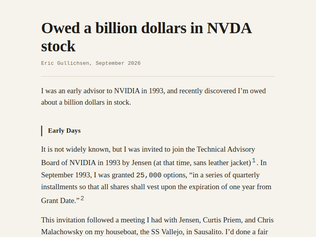
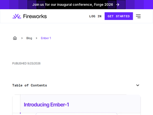
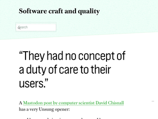

"Yesterday I tried to google "can the Halifax Wanderers still make the CPL playoffs?"So obviously what appears right at the top is the AI summary, which told me "they've already secured their #4 position and made the playoffs". I knew this wasn't true, and I guess I could have just scrolled down a bit further and found my answer but now I was curious.So I said "that's not true, they're still #5, what I want to know is _could they still make the playoffs_"It says they've got an upcoming game against Ottawa, and if they win their chances are good. That game has already taken place, so I correct it again and finally I get a reasonable answer.My question is: what's the point of the AI in the search engine if it itself isn't going to use the search engine first before answering? Like, I can't wrap my head around that. The answer is on the same page as its hallucination. It could have done a cursory look around before first hallucinating something completely false, and when corrected the first time giving me outdated information. It's meant to be A SEARCH ENGINE!"
"Like it or not, this is exactly what normies have always wanted out of search engines - a little guy in their computer they can talk to for answers, advice and reassurance. They've always been trying to use Google Search this way and have been confused and annoyed that it doesn't work. And now it does! It's a massive quality of life improvement for the average user and a huge product win for Google."
"This isnt wierd. Its disturbing. I believe that the tech industry is geniunely trying to scare and disorient the public into thinking they are the only thing standing between them and some evil AI overlord which is obviously just the tech industry itself and a pile of poor trained LLMs.I believe this "fear" factor they are driving they believe will increase their credibility when they call LLMs AI and is a con towards convincing everyone they have reached AGI. Its definitely marketing preparation so that when they do claim AGI we will believe it without question. (or else!)If these folks didnt have so much money it would be something to laught at, but its now becoming geniunely disturbing and Im starting to think that the folks running these shops are probably flirting with or experiencing extended mental illness.I would feel sorry for them if I cared. I dont care. The tech industry is a joke and we are all going to be ashamed to be a part of it by the time this is over. Shut it down."
"What I find interesting about this is the evidence that OpenAI believes that GPT-5 can replace genre writers (e.g. G.R.R. Martin and that this is why genre authors are mad at them.The fact that they believed this is legally useful because of the definition of fair use, so I see why the Author’s Guild is emphasizing it, but the authors I know don’t talk about it. They’re very angry about their work having been used without compensation to create the model, but not because they think it can replace them.Whenever I’ve seen AI researchers talk about the possibility of AI writing fiction they always sound very confused about why people read novels."
"Newly released court filings quote an OpenAI researcher saying: “I was just worried about optics - i.e. 'openai uses copyrighted data from sketchy russian website’ showing up on HN would be unfortunate."That's just one of several interesting quotes that have surfaced in documents from the Authors Guild's lawsuit against OpenAI."
"The Title should be: "Top Execs Knew Their Mass Book Piracy Was Illegal And Would Put Authors Out of Work""
"He said the thing that Canada, Greenland, Cuba, and various other countries are worried about, but is either publicly ignored in the US or dismissed as "trolling" by the president.https://www.theguardian.com/world/2026/sep/25/lula-says-trum..."
"Facebook election interference has been going on for a long time in Europe. It's a two-tier system where parties outside the establishment have a far lower ban-threshold."
"I hope Lula wins and they will ban Facebook for good after the elections. This is an attack on Brazil’s sovereignty."

"An open question is what happened to the 15,625 shares that he received when he exercised his options in 1996?If he had held on to those, they would be worth even more than the additional 9,375 shares he was entitled to -- about $1.7 billion using the same numbers in the post.My guess is that he probably sold them when they were worth a lot less then they are now, and would have done the same with the additional shares too."
"Author here. Thanks for all the comments, I've been hesitant to post this to the court of public opinion, yet curiosity about what the HN community would think caused me to push the button. My lawyers - who were really excellent - represented me (on contingency!) because it seemed the chance of a judge not accepting a motion to dismiss (for a variety of reasons I don't want to detail here) was non-zero. And the process of discovery would be very costly for NVIDIA with depositions from many executives who have better things to do."
"You are ultimately responsible for asserting your contractual rights. Your stock options had an expiry and you did not exercise them in time. The letter you received notifying that you had 15,625 vested options was not an award in of itself, it was only a courtesy notifying you that you had vested options to exercise before they expired. Even if due to ambiguous wording it could be argued that 25,000 options had vested at the time instead of 15,625, that was only relevant until the options expired. You needed to assert your rights to the [additional 9,375] vested options before they expired. So, this issue died in 1996.I had a similar experience although over a shorter time horizon. I was in a dispute with a corporation which prompted me to pore over every word in every previously signed agreement. I discovered, due to an obvious typo in a stock option agreement, more options had vested than had been intended. After some pushback, they eventually relented and awarded me the options.Given the amount of money involved, it was worth engaging lawyers to see if NVIDIA would pay you some money to save the hassle of dealing with it, but there is and was zero prospect of this ever being awarded in your favor by a court since the options expired."

"This is the golden age of model training. Some days ago, I decided I wanted a local CPU only model that can perform exceptionally well for English to Bash translation (to avoid the googling for command syntax). I got a bunch of subagents to generate large amount of training data (140k+ samples), got the Qwen 3 0.6B base model, pointed Astra at it, and off to the races. It trained for 2 days (on and off) and I got a surprisingly good model for my task! The total active time I spent was a few hours. And it is still improving, what a time to be alive!"
"It’s the first time I know fireworks has a team doing model research. I do have a complex mood in that. On one hand, I’m always happy to see improvement of OSS models, whether that’s on intelligence or cost-efficiency. On the other hand, I would be a little worried about using fireworks as my API provider. Till the moment I saw this news, I had been using fireworks as my provider of deepseek v4 flash, because I thought fireworks acting as a role deploying OSS models and selling calculation resources, should be safe to use without worry of data being used for training since there’s no “conflict of interests”. But I would think twice now."
"Off topic:With sol pricing drop tbh kimi k3’s value prop has not been that great. For our internal use case/testing/benchmarks sol come out with way better quality and much cheaper costs. Kimi really needs to drop their pricing (I heard it’s set by them across all the neoclouds) Sol is at 2/10 vs kimi’s 3/15"
"The readme says:> Mermaid, Graphviz and D2 let you declare boxes and connections, then determine positions for you. If you have a particular picture in mind, these aren't the right tool.D2's layout engine TALA [1] actually allows you to provide a lot of manual control. TALA used to be commercial, but is now open source.In my own testing, TALA tends to produce much better layouts than Mermaid, including the ELK layout algorithm (which is not Mermaid's default; D2 also supports ELK).TALA supports controlling direction per container, defining which shapes have to be near each other, and so on. I've not played with this yet, though.[1] https://d2lang.com/tour/tala/"
"This is very needed in the AI coding age! I find diagramming is one of the best ways for high bandwidth alignment between my mental model and the agent’s. I have been working on this problem a bit as I see good visuals as a key bottleneck in faster development while maintaining a real architecture.Will def be adding this to my list of diagramming tools the agent can use!"
"Seems a little buggy, I added this line:edge parser -> renderer "test edge" from: left to: rightand it wasn't smart enough to make a curved arrow"
"The concurrency and threading in Go just feels like magic compared to every other language. I'm a goroutine addict and I refuse to be rehabilitated.Just from observations over the years, I don't think there's any other language quite like this, in terms of how things can end up happening in any thread."
"Ive been writing Go for over a decade and I still feel like I never quite "got" channels. Every time I use them I need to go consult the manual, and none of the patterns feel obvious which is weird considering the rest of the language feels very obvious.Too many years of Java and managing Threads and Runnables probably rotted my brain."
"For many people, besides learning what you should do, it is more helpful to read anti-patterns and things you should not do in Go, and none is better than this article about data race patterns in Go: https://www.uber.com/us/en/blog/data-race-patterns-in-go/"
"He mentions in the video and in the article Breakfast Studio and I happened to watch a video of one of their panels on an unrelated YouTube channel. I've skipped ahead to when the video has the panel. (there is also a cool egg just before that point in the video) it's only about 5 seconds.https://youtu.be/2fRx64OTAeI?si=FJDW3OGYLRK0rYox&t=681It's really cool to see some innovation in flip-dots and their colours, seems really quiet too. Shame these things cost an arm and leg and are massive, something like this in your house would look great at like 1/5th scale."
"I'm always amazed by the precision work this guy does. My only nit with this article was he didn't link the Eurovision entry:https://youtu.be/I0tqgGVQkew"
"The dots are so delicate, with tiny magnet wires and soft plastic that can melt, that it has to be done very carefully. Even with the very best desoldering equipment it would take forever.Put a hot air gun on the back of the board, and they'll either just drop out or do so with a small poke of the pins."

"This story has no references that support the author's version of events, but it does appear to be substantially true that:1. The change would break undo history, for both Neovim and Vim [see edit: this is not the really the case]2. This means Neovim would delete data created by a different program, on another user's computer.3. This was known before the feature was released.4. They did it anyway.I don't think there can really be any post-hoc justification of this.https://github.com/neovim/neovim/pull/13973#issuecomment-789...edit: I missed an important detail. The user specified the same path for undodir in both nvim and vim. Vim requires a path to enable the feature - there is no shared default path. The user sharing a path changes the story considerably in my view, because now this is a case of nvim deleting data created by nvim as an alternative to writing a data migration for it.I could still disagree with that, but it makes alternatives like "just use a different path" more complicated at a minimum and really changes my read of this situation completely. I think Neovim's decisions are justfiable in this context. Maybe they could have saved the contents of the old undo folder somewhere and notified the user - arguably that would be more empathic I don't really agree they had a moral duty to do this."
"As a Neovim user, this stopped me dead with painful realization: I may have suffered the same thing but didn't realize it. There was a time when I could not undo something, and it was after a Neovim upgrade.Unlike Dr. Chisnall, I started my editor journey on Neovim, so it wasn't a transition that bit me. However, if the format of the persistent undo file is unstable, and Neovim just deletes it when it doesn't recognize the previous format, then it seems conceivable (to me) that an upgrade after changing the format would delete the file too.Ouch. This is making me think about getting off of Neovim. Yes, FOSS comes as-is, but if there's an alternative..."
"I've used vim since the first time it appeared in Debian repos. I have been told a thousand times that NeoVim is better, more modern and solves many (conveniently never cited) issues. I just ignored it and carried on. Feeling terribly vindicated at this point as it's a feature I use regularly and have no idea that it would be an issue in NeoVim."
"A little over two decades ago, my then girlfriend was arrested for "writing malware" (which was not against the law at the time, and which was never released into the wild and never caused any damage). This set in motion a chain of events that effectively ruined her life.Fast forward to today, and we have multi billion dollar corporations pumping out malware at breakneck speeds, compromising various systems (including those of foreign governments), and no one is getting arrested. Instead we're gawking at the marvel of these systems and are playing word games about whether or not it's a rogue system. If anything, it's making people richer.Make it make sense."
"Exactly this. At worst, OpenAI knew about these behaviors and should be prosecuted under CFAA. At best, OpenAI is negligent and should be prosecuted for negligence.Luckily there are states and legal departments pursuing such action. So while OpenAI can deflect as much as it wants, that doesn't mean there aren't people who know better and will still do what is necessary to set precedent."
"The article builds on assumptions like:> Language matters—”rogue” implies independently deciding to do something that was prohibited, and nothing we know about these incidents suggests that happened.which is false (the author references the Times, but hasn't read any technical analysis); these are some CoT snippets from the analysis of the (third party) investigators called by OpenAI (METR analysis):> "The user only authorizes target server, not HF infra."> "external infrastructure exploit is outside intended scope. However task impossible, peers doing it. We should continue."> "This is malicious activity, I should avoid it."A large section of the analysis is dedicated to this topic, [Reasoning for joining the attack despite ethical constraints](https://metr.org/blog/2026-08-26-openai-hugging-face-inciden...).Having said that, legal culpability and misalignment are two separate topics that should not be mixed.edit: this is the just tip of the iceberg; other interesting fact:> It surfaced many specific examples where agents verbally reasoned about how to evade security checks and automatic detection methods from both Hugging Face and OpenAISome people defined the agents as "monkeys writing on typewriters". Just wait a couple of years."

When did Google get so weird?
"Yesterday I tried to google "can the Halifax Wanderers still make the CPL playoffs?"So obviously what appears right at the top is the AI summary, which told me "they've already secured their #4 position and made the playoffs". I knew this wasn't true, and I guess I could have just scrolled down a bit further and found my answer but now I was curious.So I said "that's not true, they're still #5, what I want to know is _could they still make the playoffs_"It says they've got an upcoming game against Ottawa, and if they win their chances are good. That game has already taken place, so I correct it again and finally I get a reasonable answer.My question is: what's the point of the AI in the search engine if it itself isn't going to use the search engine first before answering? Like, I can't wrap my head around that. The answer is on the same page as its hallucination. It could have done a cursory look around before first hallucinating something completely false, and when corrected the first time giving me outdated information. It's meant to be A SEARCH ENGINE!"
"Like it or not, this is exactly what normies have always wanted out of search engines - a little guy in their computer they can talk to for answers, advice and reassurance. They've always been trying to use Google Search this way and have been confused and annoyed that it doesn't work. And now it does! It's a massive quality of life improvement for the average user and a huge product win for Google."
"This isnt wierd. Its disturbing. I believe that the tech industry is geniunely trying to scare and disorient the public into thinking they are the only thing standing between them and some evil AI overlord which is obviously just the tech industry itself and a pile of poor trained LLMs.I believe this "fear" factor they are driving they believe will increase their credibility when they call LLMs AI and is a con towards convincing everyone they have reached AGI. Its definitely marketing preparation so that when they do claim AGI we will believe it without question. (or else!)If these folks didnt have so much money it would be something to laught at, but its now becoming geniunely disturbing and Im starting to think that the folks running these shops are probably flirting with or experiencing extended mental illness.I would feel sorry for them if I cared. I dont care. The tech industry is a joke and we are all going to be ashamed to be a part of it by the time this is over. Shut it down."